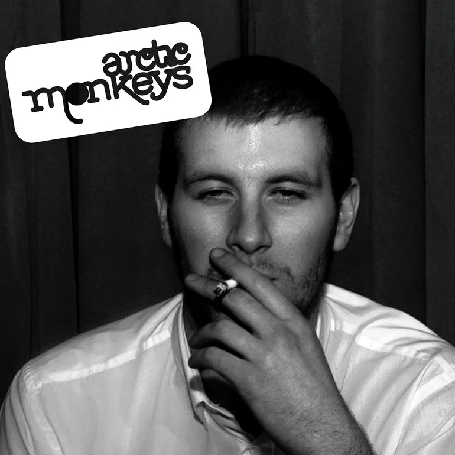
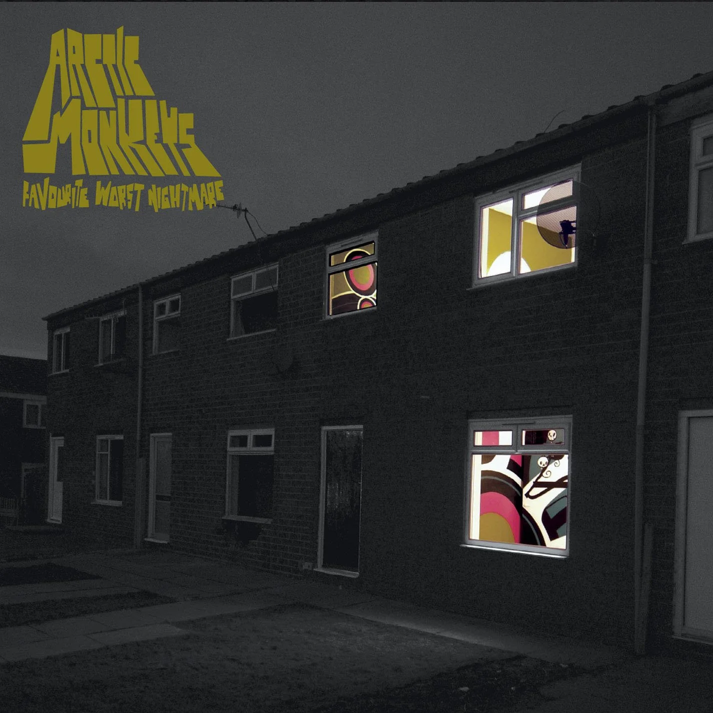
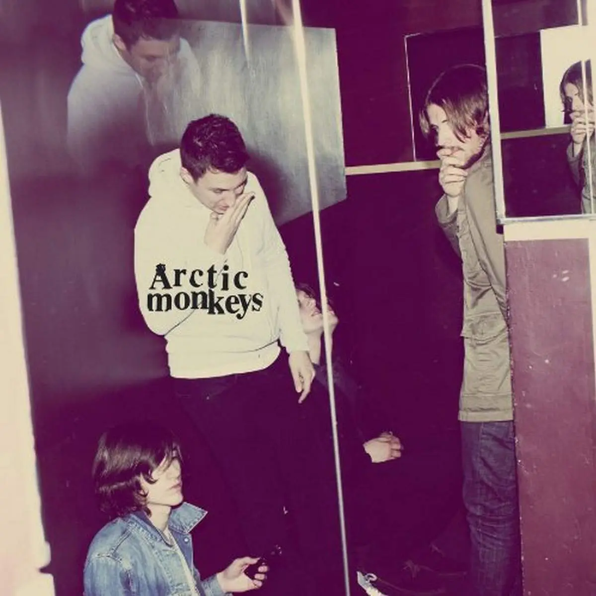
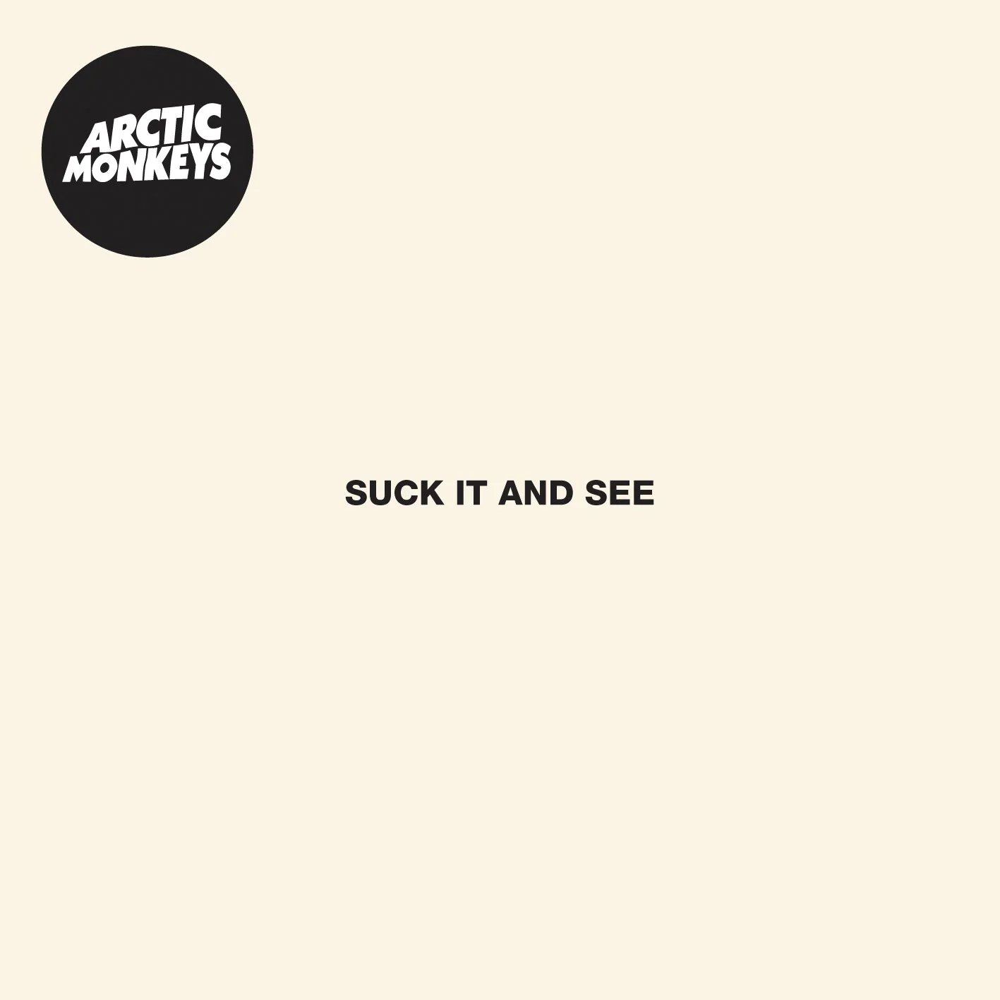
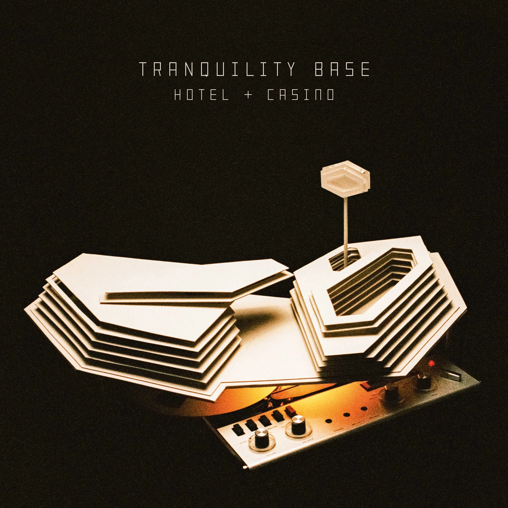

Whatever People Say I Am, That’s What I’m Not

Bajo el sello Domino Records, el mismo de artistas como Franz Ferdinand o Hot Chip, la banda edita su primer LP, Whatever People Say I Am, That’s What I’m Not, que se convierte rápidamente en el álbum debut con las ventas más rápidas en la historia de la música británica, vendiendo 363.731 copias en su primera semana. Un disco plagado de éxitos, con canciones como “I Bet That You Look Good On The Dancefloor” o “When The Sun Goes Down“. Canciones fuertes y directas que describían a su ciudad natal y su entorno. Rolling Stone lo describiría como “Una oleada de riffs que aumenta con la exposición repetida”, mientras que NME diría que “En esencia se trata de un despojado disco de punk rock, pero cubierto con el toque de la gran música británica”. Una extensa gira provocó la salida del bajista Andy Nicholson y la incorporación de Nick O’Malley en su reemplazo.
Favourite Worst Nightmare

En 2007 editan su segundo álbum: Favourite Worst Nightmare. Un disco muy potente con hits como “Brianstorm“, “Fluorescent Adolescent“, o “Teddy Picker“. La esencia rockera de la banda se mantenía intacta pero ya se esbozaban mejores arreglos sonoros y de calidad en cuanto a su producción y sonido. Mientras tanto, la banda seguía cosechando premios alrededor del mundo y recibiendo halagos de la crítica, especialmente en Inglaterra donde tuvieron el orgullo de ganar los premios a Mejor banda británica y Mejor álbum británico en los Brit Awards de 2008.
Humbug

En 2009 editan su tercer álbum, Humbug. Amparados por Josh Homme (líder de Queens of The Stone Age) como productor se trasladan al estudio Rancho de la Luna en Joshua Tree, California, en donde Homme grababa con su proyecto paralelo The Desert Sessions. Canciones como “Crying Lightning” o “Potion Approaching” develaban el nuevo sonido de la banda: más oscuro y claramente marcado por la influencia de Homme en las perillas. La mayoria de las críticas fueron positivas y muchos resaltaban la maduración de la banda, tanto sea compositivamente como musical.
Suck It And See

El 4 de marzo de 2011, la banda estrenó por su website una nueva canción titulada "Brick by
Brick" y que
contó como vocalista a Matt Helders. Helders explicó después que la canción no era un
sencillo, sino tan
solo una prueba de lo que se iba a venir. El 10 de marzo la banda reveló que el título del
disco sería "Suck
It and See" y que iba a lanzarse el 6 de junio del 2011.
El álbum fue exitoso comercialmente, con varios medios y críticos apuntando que la banda
"tuvo un éxito
repentino en América y Estados Unidos". En la primera semana de lanzamiento del álbum se
vendió alrededor de
80 mil copias, debutando como número uno de las listas de álbumes británicos. En general, el
álbum vendió
alrededor de 330 mil copias. NME nombró la portada del álbum, un monocroma blanco simulando
el estilo del
Álbum Blanco de Los Beatles, como una de las peores de la historia. En Estados Unidos, el
título del álbum
tuvo controversia, llegando a censurarlo en algunos lugares con un sticker encima del
nombre. Alex informó a
la XME que "solamente ellos piensan que es algo grosero e irrespetuoso". El julio, el medio
Mojo lo incluyó
en el puesto 39 de los "50 mejores álbumes del 2011".
AM
Quinto disco del grupo en siete años, el que significaría el último antes del parón de cinco
años que
precede a Tranquility Base Hotel & Casino. Y la verdad es que dejaron el pabellón bien alto.
Volverían a
superar el millón de copias en el Reino Unido, por primera vez desde Whatever People Say…, y
además también
pasarían del millón de ventas en Estados Unidos. Y esto, para un grupo de rock europeo, son
palabras más que
mayores. Oasis, por nombrar uno, se pegó tal golpe en el mercado americano que decidieron no
volverlo a
intentar.
AM, cuyo nombre surge como ‘copia’ de un recopilatorio de la Velvet Underground, baila entre
muy diversos
géneros, desde el ya toque psicodélico característico de sus últimos discos, hasta el desert
rock o el blues
rock. Pero donde destaca, por su novedad en la discografía de Arctic Monkeys, es en la
exploración del
hip-hop, el R&B, o el soul.
Tranquility Base Hotel & Casino
